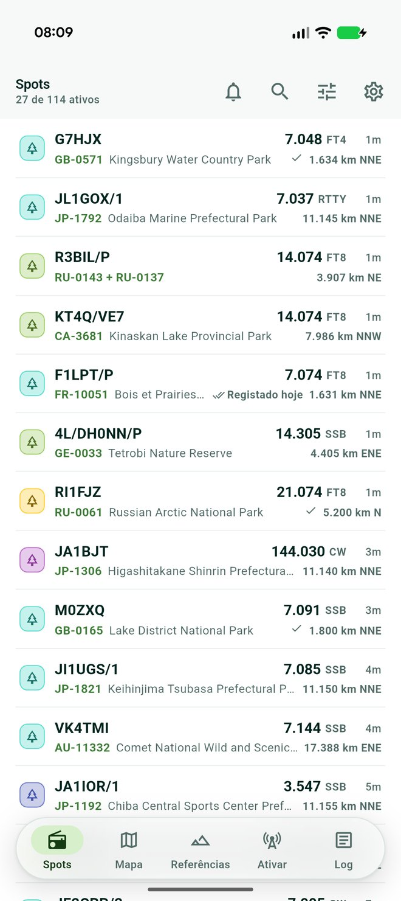
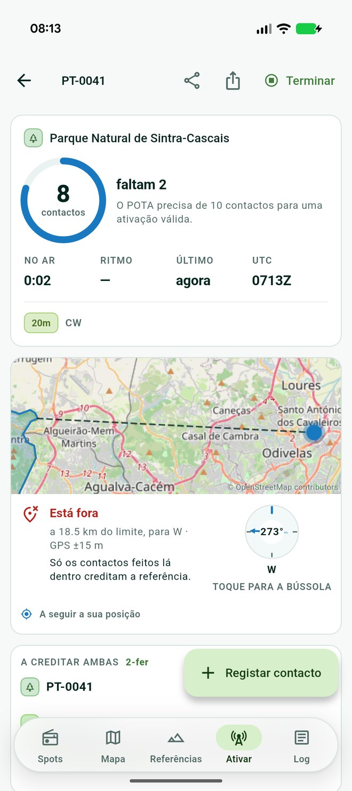
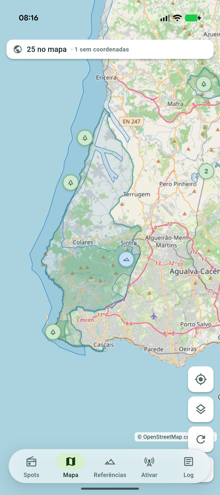

Parks · Summits · Flora & Fauna · Towers
Work
the outdoors
Live spots when you are hunting. A log, a park boundary and a UTC clock when you are the one being hunted.
Android 7·0 and up. Free, and it works without an account.
Four programmes,
one feed
The interface never asks which one you are chasing. A park, a summit and a tower sit in the same list, sorted the same way, logged the same way.
- POTAParks on the Air
- SOTASummits on the Air
- WWFFWorld Wide Flora & Fauna
- TOTATowers on the Air
One contact can credit more than one of them. A summit inside a park is typed once and counted twice.

01
From the sofa
Every spot from all four programmes, in the order you actually want them. Newest first, or nearest to you, or up the band by frequency, or by which activators are still short of a valid activation and need the contact most.
- References you have worked are ticked as you scroll.
- Standing alert rules say what to notify you about, and what to ignore.
- Silence everything for an hour, eight hours, until tomorrow, or for good.

02
On the hill
The dashboard counts what the programmes count. Contacts made, how many are left, time on air, rate, and a UTC clock that warns you before the day rolls over underneath your activation.
- Self-spot to POTA, WWFF and Towers without leaving the app.
- The entry form tells you when you have worked an operator before, under any portable form of their call.
- Export the activation as ADIF, one file per reference per UTC day.
A park is an area,
not a pin
The programmes publish one coordinate per reference and it is only a label anchor. For a long park it can sit sixty kilometres from where you parked the car.
Where the real shape is on file, GoatHam draws it and answers the question you actually have: are you inside it, outside it, or close enough to the edge that your GPS cannot say. Contacts only count from inside.
Three answers, never two. A reference with no shape on file is never drawn as though you were outside it.

03
Your log stays yours
It lives on your phone and leaves it only when you export it. Back the whole thing up as a single ADIF file and restore it by importing that file again.
Import from any other logger. A contact already in the log is skipped, so importing the same file twice adds nothing at all.
Activations are worked out from the contacts themselves rather than stored, so editing, deleting or importing can never leave your activation list disagreeing with your log.
Swipe a contact away and undo it. Undo the last contact of a run and the callsign goes back in the field, ready to be retyped.
Take it outside
English and European Portuguese. Reference lists download for the valley with no signal.
Version 0·1·0. For licensed amateur radio operators.